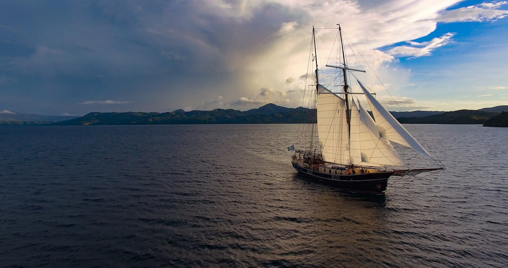
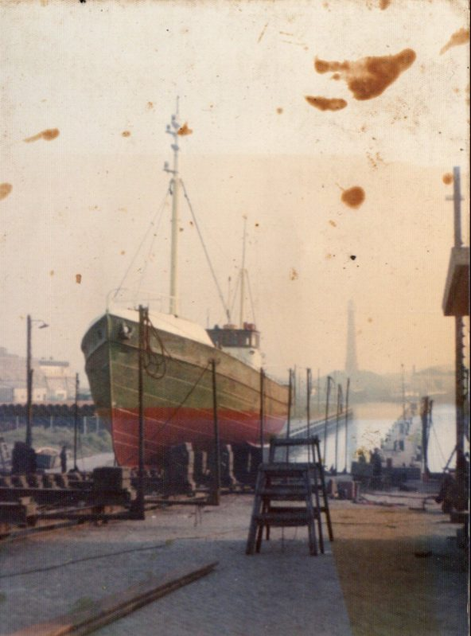
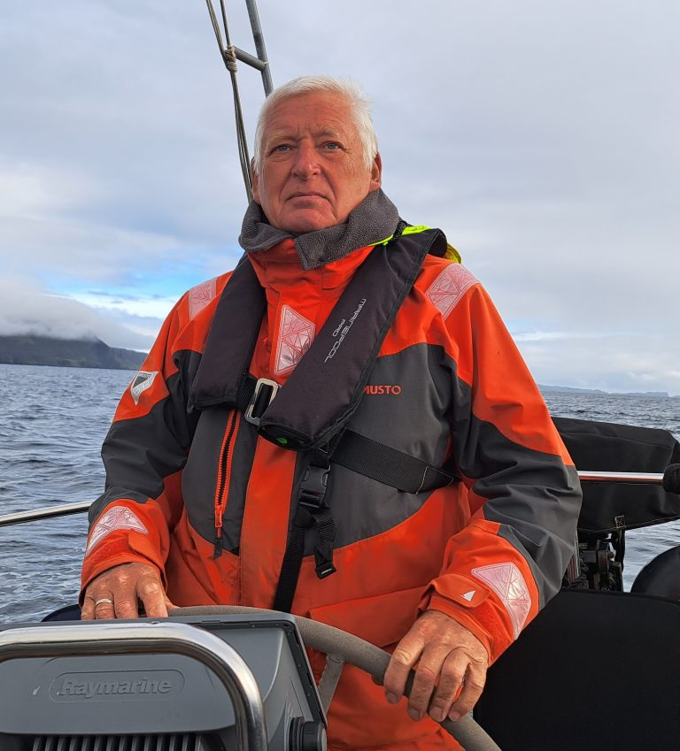
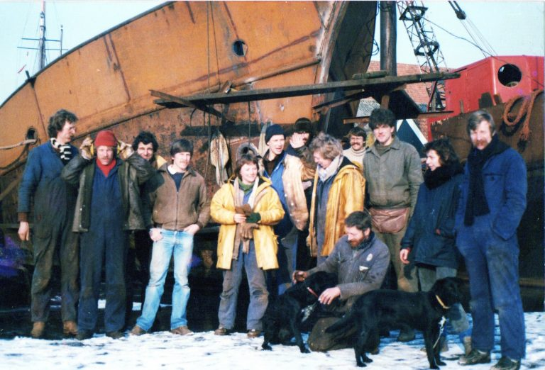
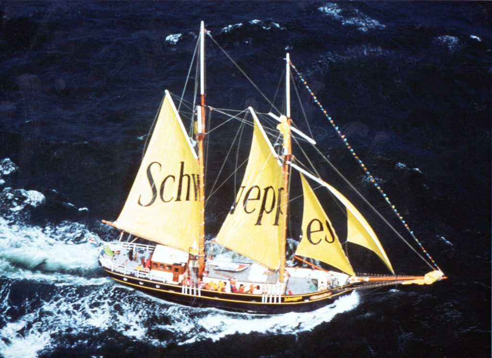

115 years at sea.
Pilot boat, herring fetcher, war survivor, tall ship racer and now a charter schooner in Madagascar.
Watch her sail.
Luna Moon's story, on film.




- 1910
Built in Haarlem
Launched in the Netherlands as a riveted steel offshore pilot vessel, guiding ships through the English Channel.
- 1914–1918
Waiting out the war
The Netherlands stayed neutral, and she stayed in port.
- 1920s–30s
Baltic herring fetcher
She ran between the fishing fleets in the Baltic, collecting the catch and racing it to market.
- 10 May 1940
Scuttled to keep her free
As German forces invaded, her owners Cornelis den Dulk and Judith Wassenberg sank her in a creek near Schiedam rather than let her be taken.
- 1947
Raised and renamed
Refloated and refitted for herring fishing, she was sold and renamed Arie Nico. Later, as Tonijn, she took anglers out and supplied the pirate radio ships of the North Sea.
- 1982–1985
Reborn as a schooner
Marine surveyor Henk van Hoogendoorn spent three years converting her into a topsail schooner and named her Elizabeth Louw, after his grandmother.
- 1985–1990s
Tall ship years
She raced tall ship regattas across Europe, flew the flag for Schweppes off the beaches of Belgium and France, and was VIP ship at the start of the Whitbread Round the World Race.
- 1990s
South to the Seychelles
A charter company took her to the Indian Ocean.
- 2005
A great sailing ship
Added to Chapman's list of Great Sailing Ships of the World.
- 2019–2020
Refit in Mossel Bay
Her current owners rebuilt her in South Africa, reusing original timbers wherever they could.
- Today
Luna Moon, Nosy Be
Based in northwest Madagascar, sailing private charters for families and friends.
Featured in
Films, features and news stories about Luna Moon.
Circle of Stoke
“Big Surf in Madagascar”: the last surf session of a sailing trip aboard Luna Moon.
Watch on YouTubeNorth Action Sports
Kitesurfer Jalou Langeree’s girls-only kite trip on the ship, premiered as the film “118ft of Freedom”.
Read the articleImprove Sailing
The Luna Moon Sailing Academy, listed among the 15 most remarkable sailing schools in the world.
Read the articleMossel Bay Advertiser
A visit to the historic vessel in Mossel Bay harbour during her refit.
Read the articleRichards Bay
History sails into Richards Bay as Luna Moon heads south to Mossel Bay for her refit.
Download the PDFMossel Bay Advertiser
How work on Luna Moon and other ships kept the Mossel Bay ship repair yard busy.
Download the PDFEngineering News
The same ship repair story, from the engineering trade press.
Download the PDFMaroela Media
The historic schooner at anchor in Mossel Bay during her renovation.
Download the PDFChapman
Listed in Great Sailing Ships of the World, 2005 edition.

Be part of the next chapter.
Charter the whole ship for your family or friends.